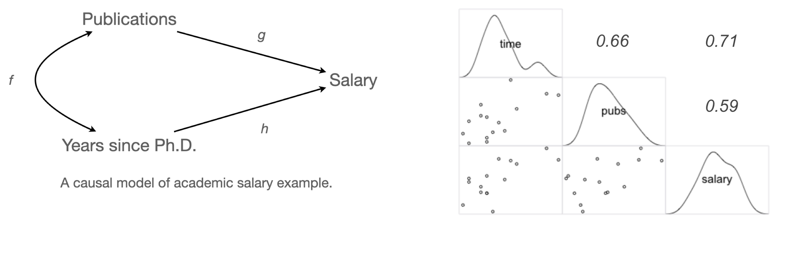
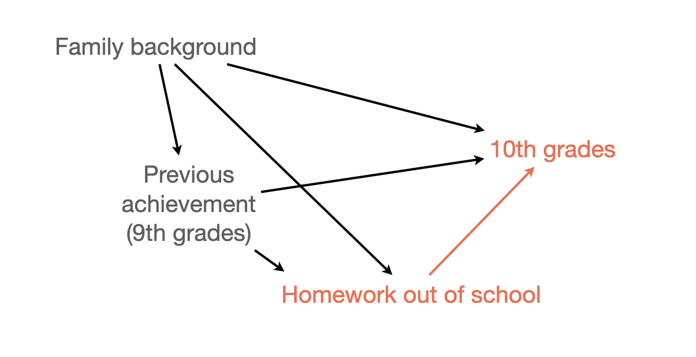

acad0 = pd.read_csv("data/c0301dt.csv")
acad0.head(5) time pubs salary
0 3 18 51876
1 6 3 54511
2 3 2 53425
3 8 17 61863
4 9 11 52926Mixed
선형 관계에 기반한 모형
예측 모형 vs. 인과 모형
Source: Cohen, J., Cohen, P., West, S. G., & Aiken, L. S. (2003). Applied multiple regression/correlation analysis for the behavioral sciences (3rd ed.)
교수의 연봉(salary)이 학위를 받은 후 지난 시간(time since Ph.D.)과 출판물의 수(pubs)에 의해 어떻게 영향을 받는가?

Data: c0301dt.csv
acad0 = pd.read_csv("data/c0301dt.csv")
acad0.head(5) time pubs salary
0 3 18 51876
1 6 3 54511
2 3 2 53425
3 8 17 61863
4 9 11 52926from statsmodels.formula.api import ols
mod1 = ols("salary ~ time", data = acad0).fit()
mod2 = ols("salary ~ pubs", data = acad0).fit()
mod3 = ols("salary ~ time + pubs", data = acad0).fit()세 모형을 비교하면,
Model 1: \(\widehat{salary} = \$1,224\:time + \$43,659\)
Model 2 : \(\widehat{salary} = \$336\:pubs + \$46,357\)
Model 3: \(\widehat{salary} = \$983\:time + \$122\:pubs + \$43,082\)
time)의 효과는 $1,224에서 $984로 낮아졌고,pubs)의 효과는 $336에서 $122로 낮아졌음.

각 회귀계수를 partial regression coefficient (부분 회귀 계수) 라고 부름.
부분 회귀 계수의 첫번째 해석:
이는 다른 변수를 고려 (통제, controlling for) 했을 때 혹은 다른 변수의 효과를 제거 (partial out) 했을 때, 각 변수의 고유한 효과를 의미함; holding constant, controlling for, partialing out, adjusted for, residualizing
뒤집어 말하면, 연차만 고려했을때 연차가 1년 늘면 $1,224 연봉이 증가하는 효과는 연차가 늘 때 함께 늘어나는 논문 수의 효과가 함께 섞여 나온 효과라고 말할 수 있음.
이는 인과관계에 있는 변수들의 진정한 효과를 찾는 것이 얼마나 어려운지를 보여줌
부분 회귀 계수에 대한 두번째 해석

Diamonds의 예
만약, 다음과 같은 인과모형을 세운다면,

만약, 연차의 효과 $1224이 논문수를 고려했을 때 줄어든($983) 수준을 훨씬 넘어 통계적으로 유의하지 않을 정도로 0에 가까워진다면, 연차의 효과는 모두 논문의 효과를 거쳐 나타나는 것이라고 말할 수 있음. 이 때, 완전 매개 (fully mediate)한다고 표현함.

이들는 인과관계의 기제/메커니즘의 일부를 설명해 줌.
반대로, 만약 다음과 같이 논문의 효과가 거의 사라진다면, 논문의 효과는 가짜 효과, spurious effect라고 표현함. 이는 논문과 연봉 간의 관계가 보이는 이유는 연차라는 common cause가 연결하고 있기 때문임. 이를 confounding이라고 함.

신발을 신고 잠든 다음날 두통이 생긴다면?
Source: Introduction to Causal Inference (ICI) by Brady Neal
일반적으로, 표면적으로 드러난 변수간의 관계가 숨겨진 다른 변수(lurking third variable)에 의해 매개되어 있어 진실한 관계가 아닌 경우, confounding 혹은 confounder가 존재한다고 함.
사회과학에서 오래된 가장 핵심적인 문제이나 최근까지도 정확히 정의하기 어려움 개념이었음.
Causal analysis라는 통계와는 별개의 개념으로 발전되어 최근에야 이론적으로 완성이 되어 관심이 높아짐.
극단적이지만 이해하지 쉬운 예로는

Simpson’s paradox
아래 첫번째 그림은 집단 전체에 대한 플랏이고, 두번째 그림은 나이대별로 나누어 본 플랏
전체 집단을 보면 운동을 많이 할수록 콜레스테롤이 증가하는 것으로 보이나,
나이대별로 보면, 상식적으로 운동이 긍정적 효과가 나타남.
왜 그렇게 나타나는가?

Source: The book of why by Judea Pearl
관찰 데이터로부터 진정한 관계를 파악하기 위해서는 이와 같은 통계적인 통제를 통해 혹은 인과분석이라는 좀 더 큰 프레임에서 분석해야 하며, 깊은 논의가 필요함
예를 들면,
은퇴한 노인들을 대상으로 규칙적인 걷기가 사망율을 감소시킬 것이라는 가설을 확인하기 위해 1965년 이후 8000명 가량의 남성들을 추적조사한 데이터의 일부를 이용했는데,
Source: The book of why by Judea Pearl
Source: Introduction to Causal Inference (ICI) by Brady Neal
COVID-27


Source: Multiple Regression and Beyond (3e) by Timothy Z. Keith
National Education Longitudinal Study of 1988 (NELS:88)
학생들의 과제는 성적에 영향을 주는가? 준다면 그 영향력의 크기는 어떠한가?

운동능력이 뛰어나면 지능이 떨어지는가?
관계성(correlation)으로부터 인과관계(causation)를 끌어내려는 매우 높은 경향성이 존재
기존 통계학의 개념을 넘어서 인과관계를 파악하기 위한 새로운 프레임워크
The Fundamental Problem of Causal Inference
Source: Introduction to Causal Inference (ICI) by Brady Neal; The book of why by Judea Pearl